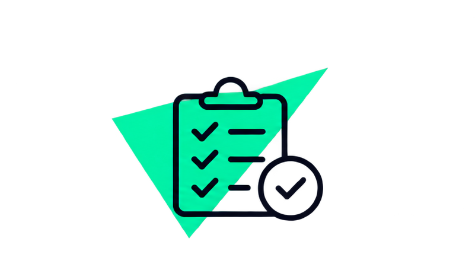
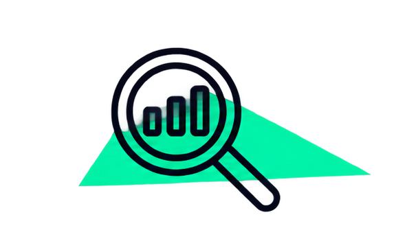
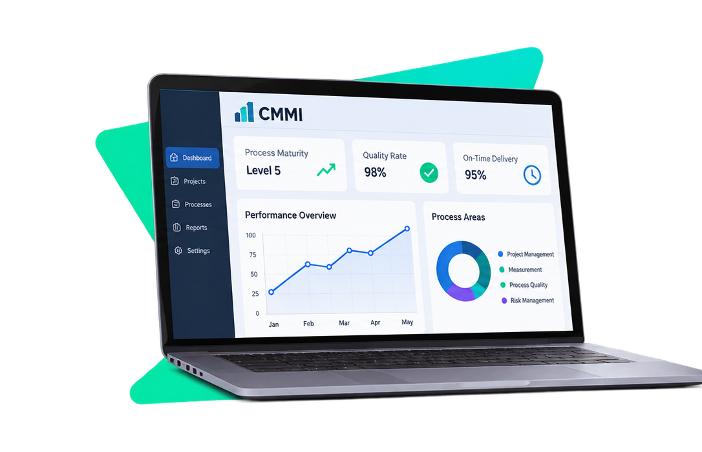

Procesos definidos
Establece formas de trabajo claras, documentadas y compartidas por el equipo.
CMMI es un modelo que ayuda a las organizaciones a evaluar y mejorar sus procesos, aumentar la calidad de sus productos y trabajar de manera más eficiente.
Conocer CMMIUn enfoque estructurado para trabajar mejor, controlar los procesos y entregar resultados de calidad.

Establece formas de trabajo claras, documentadas y compartidas por el equipo.
Permite planificar, supervisar y dar seguimiento al trabajo y a sus resultados.

Ayuda a identificar oportunidades, medir el desempeño y mejorar con evidencia.
CMMI proporciona buenas prácticas que ayudan a las organizaciones a evaluar sus procesos, identificar oportunidades de mejora y establecer formas de trabajo más eficientes.
Conocer el modelo
Mediante CMMI, los equipos pueden organizar sus actividades, controlar sus resultados y tomar decisiones basadas en datos para mejorar continuamente la calidad de sus procesos.
Descubrir beneficiosLa implementación de CMMI permite fortalecer los procesos de una organización y alcanzar mejores resultados mediante prácticas estructuradas y una mejora continua.
Ayuda a establecer prácticas que permiten mejorar la calidad de los productos y servicios.
Favorece la organización del trabajo y el aprovechamiento eficiente de los recursos.
Permite identificar posibles problemas y establecer acciones para gestionarlos.
Facilita el seguimiento de los procesos y la toma de decisiones basadas en información.
CMMI permite reconocer qué tan desarrollados están los procesos y orientar su evolución.
El trabajo puede ser impredecible y depende en gran medida de las personas.
Los procesos están documentados, comprendidos y se aplican en la organización.
La organización se enfoca en mejorar continuamente su desempeño.
Los niveles 2 y 4 también forman parte de la escala de madurez de CMMI.